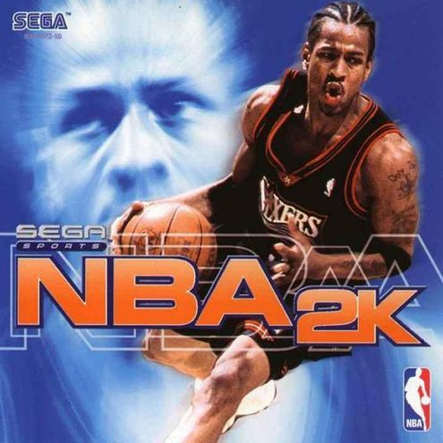

 Der für Segas Dreamcast entwickelte Titel trug den zur Jahrtausendwende passenden Namen: „NBA 2K“. Die Reihe hatte damit ihren Anfang gefunden. Von nun an entwickelte Visual Concepts jährlich einen Ableger für die Konsolen aus dem Hause Sony, Microsoft und gelegentlich auch für PC-Spieler und Nintendo-Besitzer. Die Nase vorn bei den Verkäufen hatte vorerst aber weiterhin Electronic Arts, das seine Titel ab 1998 unter dem firmeneigenen Brand „EA Sports“ entwickelte und erfolgreich verkaufte.
Doch dieser Umstand sollte sich mit den kommenden Jahren ändern, als Take-Two Interactive die Entwicklerschmiede 2005 von Sega aufkaufte, aus ihr 2K-Sports machte und der Vorsprung von EAs Live-Serie kontinuierlich dahinschmolz. Schließlich musste EA Sports nach „NBA Live 2010“ einsehen, den Kampf gegen die 2K-Konkurrenz verloren zu haben und ihre Reihe vorerst einstellten, um sich den Madden- und FIFA-Teilen zu widmen. Man musste sich eingestehen, dass die 2K-Reihe näher an der perfekten Basketball-Simulation war, es bis heute geblieben ist und den Fans das rundere Basketballerlebnis liefert. Visual Concepts wurde das Feld überlassen – doch diese dachten gar nicht daran, sich dank des Genremonopols auf ihren Lorbeeren auszuruhen.
„NBA 2K6“ war Ende 2005 der erste Teil, der es auf die gerade veröffentlichte Xbox 360 schaffte und sofort überzeugen konnte. Auch der Nachfolger ein Jahr später für die PlayStation 3 ging neue Wege. So nutzte man die Sixaxis-Funktionen des PS3-Controllers, um die Freiwürfe intuitiver ausführen zu lassen. Auch „NBA 2011“ war ein Pionier in seinem Gebiet, denn es unterstützte erstmals stereoskopische 3D-Fernseher und den PlayStation-Move-Controller. 2012 konnte 2K-Sports mit „NBA 2K11“ über vier Millionen Exemplare verkaufen und erhielten einen beeindruckenden Metascore von satten 90 von 100 Punkten.
Die Reihe wurde kontinuierlich weiterentwickelt und verbessert. Mit „NBA 2K14“ schaffte es die Reihe auf die neuen Konsolen von Microsoft und Sony.
Auf Xbox One und PlayStation 4 war es mit der Alleinherrschaft allerdings vorbei, denn EA Sports unternahm einen neuen Versuch, wieder auf dem Markt mitzumischen.
Und so veröffentlichte EA Sports „NBA Live 2014“, das von der Presse und den Fans aber zerrissen und gemieden wurde, während sich „NBA 2K14“ über großartige Verkaufszahlen freuen durfte.
Und nun ist es am 10. Oktober wieder soweit: Das neueste Baby aus dem 2K-Bauch will sich auch in diesem Jahr wieder die Genrekrone krallen.
Gelingen soll das mit über 5000 neuen Animationen, animierten Haaren, noch realistischeren Spielermodellen und -gesichtern,
dem eigens für das Spiel komponierten Soundtrack von Pharrell Williams (N.E.R.D.) und erstmals auch den europäischen Euroleague-Mannschaften.
So ist damit sogar ein FC Bayern München vertreten, der an seiner Spielweise auch anhand dieser erkannt werden soll.
Das gilt natürlich nicht nur für die Bayern – jede Mannschaft der europäischen oder amerikanischen Profiliga soll den Spielstil ihres realen Vorbilds originalgetreu übernehmen und diese entsprechend widerspiegeln.
Neu ist auch das Wurfsystem, das den Spieler direkter an die Situation des ballführenden Spielers binden will. So seht ihr beim ballführenden Spieler nun eine Leiste und einen Balken, der bei jedem Wurf so mittig wie möglich in dieser Leiste gestoppt werden muss, um den Ball optimal auf den Weg in Richtung Korb zu schicken. Je nach Deckung durch die Gegenspieler, die eigenen Wurffähigkeiten und den Stand zum Korb macht euch das Spiel das nun aber schwerer. So muss der Spieler ein Gefühl für günstige Wurfsituationen und das dazugehörige Timing, gleichzeitig aber auch ein direkteres Gefühl für die Würfe entwickeln.